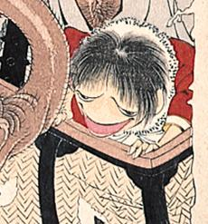

← 图鉴索引

葛篭から飛び出した河童。赤い洋服を着ている。
著作者：月岡芳年／出典：親書誌：A80_prague_0016：おもゐつづら；オモイツヅラ／日付：2011／資源識別子：A80_prague_0016_0002_0000
Copyright (c)2010- International Research Center for Japanese Studies, Kyoto, Japan. All rights reserved.